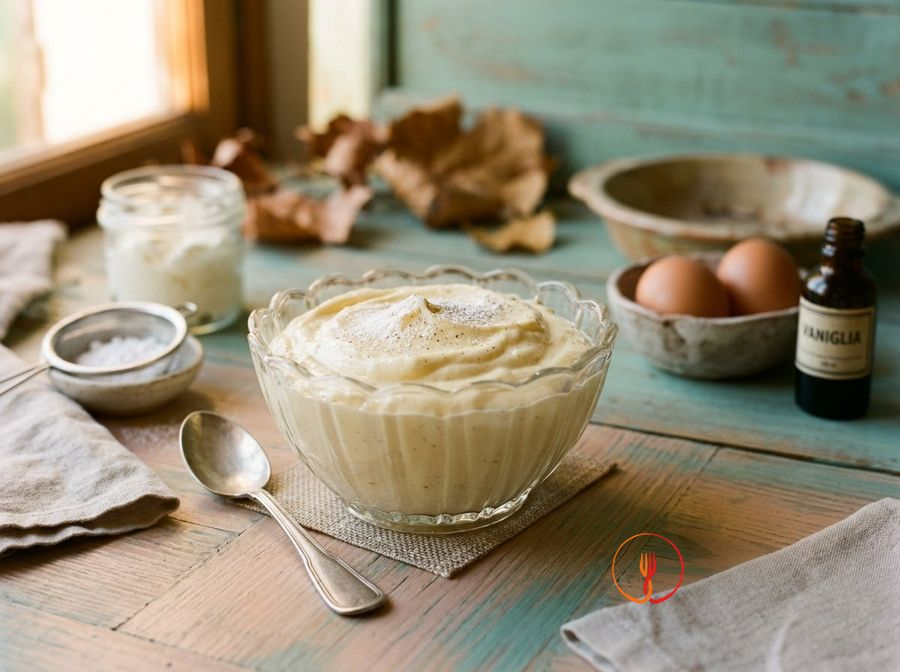

Crema al mascarpone
Ingredienti
- mascarpone freddo500 gr
- zucchero a velo100 gr
- uova medie3 numero
- estratto di vaniglia1 cucchiaino
Allergeni
Latte, Uova
Può contenere tracce di: Frutta a guscio, Glutine.
Procedimento
- Separa accuratamente i tuorli dagli albumi, utilizzando uova freschissime e mantenendo sempre puliti gli utensili.
- Per una preparazione più sicura, utilizza uova pastorizzate oppure pastorizza correttamente tuorli e albumi con un procedimento specifico e controllato.
- Lavora i tuorli con lo zucchero fino a ottenere una crema chiara e spumosa.
- Aggiungi il mascarpone freddo poco alla volta, mescolando delicatamente fino a ottenere una crema liscia e senza grumi.
- Monta gli albumi a neve ferma con fruste perfettamente pulite, utilizzando albumi pastorizzati.
- Incorpora gli albumi alla crema in tre riprese, con una spatola e movimenti dal basso verso l'alto.
- Aggiungi la vaniglia e trasferisci la crema in frigorifero per almeno 30 minuti prima di utilizzarla.
- Utilizza per tiramisù, semifreddi e dessert al cucchiaio.
Consigli dello chef
Consigli, errori e alternative:
- Non utilizzare mascarpone troppo caldo: la crema potrebbe diventare liquida.
- Non lavorare eccessivamente il mascarpone con le fruste.
- Per evitare l'utilizzo di uova crude puoi preparare una versione con 250 ml di panna montata e 250 g di mascarpone, aggiungendo 80–100 g di zucchero a velo.
- Puoi aromatizzare con caffè, cacao, scorza d'arancia o liquore.
- Mantieni la crema in frigorifero a 4 °C o meno e consumala rapidamente.
Valori nutrizionali (stima)
| Per porzione (189 g) | Per 100 g | |
|---|---|---|
| Energia | 2904 kJ / 694 kcal | 1536 kJ / 367 kcal |
| Proteine | 9.5 g | 5.0 g |
| Carboidrati | 29 g | 15 g |
| di cui zuccheri | 29 g | 15 g |
| Grassi | 60 g | 32 g |
| di cui saturi | 39 g | 20 g |
| Fibre | 0.0 g | 0.0 g |
| Sale | 0.1 g | 0.1 g |
Valori stimati con l'AI su dati medi CREA / USDA: sono indicativi e non sostituiscono il parere di un medico o di un nutrizionista.
Apri la ricetta nell'app per la lista della spesa, le schede ingredienti e i negozi vicini.